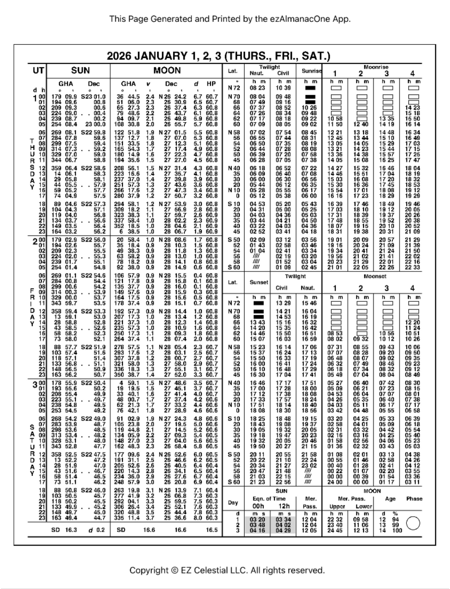

Leer el cielo
en una página
Aprendé el proceso completo: de la hora y la lectura del sextante a hG, declinación, hL, posición asumida, hv, hc e intercepto. Con tablas reales y ejercicios del Río de la Plata.
Contrastada con la edición 2026 del almanaque y con procedimientos clásicos de navegación astronómica.
Incluyen páginas diarias, incrementos y tablas de corrección. Las descargas se abren en iCloud desde el sitio oficial de EZ Celestial.
Ocho cartas, una recta
La secuencia distingue tres trabajos: obtener los datos del astro, corregir la altura y reducir la observación. Tu progreso queda guardado.
Aprender sobre la página real
Elegí una lámina. La guía indica las columnas que intervienen y permite ampliar la imagen para seguir una fila sin perderse.
Sol y Luna: la fila de la hora UT

Cuatro astros, cuatro rutas
Todos parten de hi, corrección de índice y depresión; después cada cuerpo sigue sus propias tablas hasta obtener hv.
Elegí el astro
Usamos la notación del curso: hi → ho → hv. La altura calculada de HO 229 es hc.
ho = hi ± Ei. La depresión Dp siempre reduce la altura. Aplicá una corrección combinada o sus componentes, nunca ambas.
Tiempo y ángulo
Dos calculadoras para practicar la mecánica. Usalas para comprobar tu cuenta, no para saltear el procedimiento.
De hora de zona a UT
En Argentina y Uruguay, la descripción de zona náutica usual es ZD +3: se suma a la hora de zona.
De tiempo a arco
Recordatorio: 1 h = 15°, 4 min = 1°, 4 s = 1′. Ingresá el tiempo transcurrido desde la hora entera.
Sol frente a Mar del Plata
1 de enero de 2026. Navegamos cerca de 38°00′ S, 57°33′ W y registramos una observación a las 03:24:16 de hora de zona.
La recta no termina en hL
La cadena continúa con posición asumida, altura calculada hc, altura verdadera hv, intercepto y trazado perpendicular al azimut.
Ejemplo del taller frente al Río de la Plata
Para entrar a HO 229 se elige latitud asumida entera y una longitud asumida que haga entero el hL, sin alejarse más de 30′ de la estimada.
Signo positivo: hacia el astro. Desde la posición asumida se avanza 20,5 M sobre el azimut 075° y por ese punto se traza la recta de altura, perpendicular al azimut.
| Notación usada | Equivalente inglés | Significado |
|---|---|---|
| hG | GHA / AHG | ángulo horario en Greenwich |
| hL | LHA / AHL | ángulo horario local |
| hi → ho → hv | Hs → Ha → Ho | instrumental, observada y verdadera |
| hc | Hc | altura calculada en HO 229 |
Un hG, cuatro costas
A las 06:24:16 UT, el hG calculado del Sol es 275°12.1′. Elegí una costa y calculá el hL restando su longitud W.
Mar del Plata
¿Listo para hacer una recta?
Catorce preguntas breves. La explicación aparece después de cada respuesta.
Respondé la primera pregunta para comenzar.
La secuencia en una hoja
Fecha, ZT, segundos, astro, limbo, hi, error de índice y altura de ojo.
UT = ZT + ZD. Revisá si cambió el día.
Hora entera + incrementos; aplicá v y d cuando correspondan.
hG − longitud W; hG + longitud E. Reducí a 0°–360°.
Latitud entera y longitud que convierta el hL en grado entero, cerca de la estimada.
Latitud asumida + hL entero + declinación → hc y Zn.
Índice, Dp y la ruta propia de estrella, planeta, Sol o Luna.
a = hv − hc; positivo hacia, negativo alejándose.
Marcá |a| en el azimut y dibujá la perpendicular.
Escribí siempre N/S y E/W, conservá décimas de minuto, registrá la hora al segundo y no mezcles hi, ho, hv y hc. Una diferencia de 1′ de altura equivale a 1 milla náutica de intercepto.
Fuente de las tablas
2026 EZ Celestial Nautical Almanac: páginas diarias, incrementos, correcciones de altura y tablas lunares mostradas arriba.
Descargas oficiales de EZ Celestial ↗
Material de aprendizaje: para navegación real verificá edición vigente, cronómetro, sextante y procedimiento oficial.